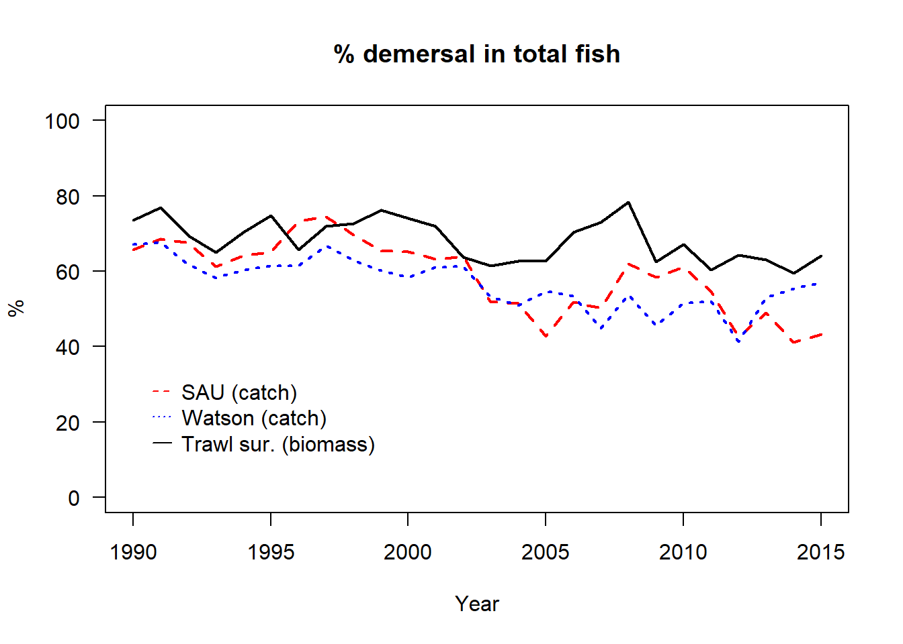

# define values
LME_name <- "North Sea"
Start_year <- 1990
End_year <- 2015
# load libraries
library(ggplot2)
library(dplyr)
library(sf)
library(tidyverse)
library(tidyr)
library(sdmTMB)North Sea biomass and catches
Goal
To collect, compile, and analyze fish community catch data, landings, and biomass estimates from a variety of sources. This includes integrating datasets from fisheries catch statistics and scientific surveys to quantify catch and biomass across different regions. The goal is to develop a comprehensive dataset for each Large Marine Ecosystem (LME) that facilitates the validation and calibration of marine ecosystem models with a focus on fish and fisheries.
Data types
Catches and landings by LME from Sea Around us Data (version 50.1)
Catches and landings from Watson (2017, 10.1038/sdata.2017.39) aggregated to LME-scale
ICES stock assessment database (ICES Stock Assessment Graphs database, extracted 2023/09. ICES, Copenhagen.”
Fisheries independent trawl survey data of fish biomass - DOI 10.5281/zenodo.7992513
Catches and landings
Time series of marine fish catches and landings were estimated by LME using data from SAU and Watson (2017). The catch estimates encompass landings, discards, and approximations of illegal, unregulated, and unreported (IUU) catches.
The landings figure includes a time series of landings for all assessed stocks for which total biomass or spawning stock biomass estimates are available in the North Sea. Some of these stocks have spatial assessment areas that only partially overlap with the North Sea. In such cases, landings were proportionally adjusted based on the degree of overlap. For each stock, landings were allocated only to areas where the species occur. For example, landings from stocks inhabiting shallow waters were not assigned to deeper areas. This allocation was based on distribution maps from AquaMaps.
# -----------------------------------------------------
# load SAU data
SAU <- read.csv("../Data/SAU/SAU_NorthSea.csv")
SAU <- subset(SAU,SAU$year %in% Start_year:End_year)
SAU <- subset(SAU, !(SAU$functional_group %in% c("Shrimps","Other demersal invertebrates","Cephalopods","Lobsters, crabs","Krill")))
# get total catch
Catch_SAU <- aggregate(tonnes~year,data=SAU,FUN=sum)
colnames(Catch_SAU) <- c("Year","Tonnes")
# get landings
Land_SAU <- subset(SAU,SAU$catch_type == "Landings")
Land_SAU <- aggregate(tonnes~year,data=Land_SAU,FUN=sum)
colnames(Land_SAU) <- c("Year","Tonnes")
# -----------------------------------------------------
# load Watson
load("../Data/Watson/Catch_LME_peldem.RData")
WAT <- subset(comb,comb$LME == LME_name & comb$Year %in% Start_year:End_year)
Catch_WAT <- aggregate(Totcatch~Year,data=WAT,FUN=sum)
colnames(Catch_WAT) <- c("Year","Tonnes")
Land_WAT <- aggregate(Reported~Year,data=WAT,FUN=sum)
colnames(Land_WAT) <- c("Year","Tonnes")
# -----------------------------------------------------
# load stock assessment reported landings
load("../Data/ICES_stocks/AquaMaps_occurence_ICES_stocks.Rdata")
load("../Data/ICES_stocks/Assessment_spatially_allocated.Rdata")
STO <- subset(grid,grid$LME == LME_name)
STO <- subset(totdat,totdat$id %in% STO$id)
STO$Catch <- ifelse(is.na(STO$Catch),STO$Landings,STO$Catch)
STO$Landings <- ifelse(is.na(STO$Landings),STO$Catch,STO$Landings)
Catch_STO <- aggregate(Catch~Year,data=STO,FUN=sum)
colnames(Catch_STO) <- c("Year","Tonnes")
Land_STO <- aggregate(Landings~Year,data=STO,FUN=sum)
colnames(Land_STO) <- c("Year","Tonnes")
par(mar = c(5, 4, 3, 3),mfrow=c(1,2))
plot(Catch_SAU$Tonnes/10^6~Catch_SAU$Year,ylim=c(0,7),type="l",col="red",lwd=2,
ylab="Catch (million tonnes y-1)",las=1,xlab="Year",main="Catch",lty=2)
lines(Catch_WAT$Tonnes/10^6~Catch_WAT$Year,col="blue",lwd=2,lty=3)
lines(Catch_STO$Tonnes/10^6~Catch_STO$Year,col="black",lwd=2,lty=1)
legend(Start_year,7.3, legend=c("SAU", "Watson", "Ass. stocks"), col=c("red", "blue","black"), lty=c(2,3,1), cex=1,y.intersp = 1,x.intersp = .5,seg.len=1, box.lty=0,bg="transparent")
plot(Land_SAU$Tonnes/10^6~Land_SAU$Year,ylim=c(0,7),type="l",col="red",lwd=2,
ylab="Landings (million tonnes y-1)",las=1,xlab="Year",main="Landings",lty=2)
lines(Land_WAT$Tonnes/10^6~Land_WAT$Year,col="blue",lwd=2,lty=3)
lines(Land_STO$Tonnes/10^6~Land_STO$Year,col="black",lwd=2,lty=1)
Biomass of assessed stocks
Time series of assessed fish biomass were estimated by LME using data from scientific trawl surveys and based on information for all assessed stocks for which total biomass or spawning stock biomass estimates are available in the North Sea. Some of these stocks have spatial assessment areas that only partially overlap with the North Sea. In such cases, biomass were proportionally adjusted based on the degree of overlap. For each stock, biomass were allocated only to areas where the species occur. For example, biomass from stocks inhabiting shallow waters were not assigned to deeper areas. This allocation was based on distribution maps from AquaMaps.
The biomass estimates from scientific surveys were corrected for differences in sampling area and trawl gear catchability (Maureaud et al. 2024; van Denderen et al. 2023). We estimated both total biomass and biomass per unit area using the GLMMTMB package. We only included species for which a stock assessment is provided.
# -----------------------------------------------------
# load biomass from stock assessments
load("../Data/ICES_stocks/AquaMaps_occurence_ICES_stocks.Rdata")
load("../Data/ICES_stocks/Assessment_spatially_allocated.Rdata")
LMEgrid <- subset(grid,grid$LME == LME_name)
STO <- subset(totdat,totdat$id %in% LMEgrid$id &
totdat$Year %in% Start_year:End_year)
# add the area to be able to estimate biomass in mass per area
STO <- cbind(STO,grid[match(STO$id,grid$id), c("area_sqkm","ocean_sqkm")])
# for some stocks, uncertainty in SSB estimate is not provided; put median value
STO$SSB_low <- ifelse(is.na(STO$SSB_low),STO$SSB,STO$SSB_low)
STO$SSB_high <- ifelse(is.na(STO$SSB_high),STO$SSB,STO$SSB_high)
# if TBio is not provided, use SSB
STO$Tbio <- ifelse(is.na(STO$Tbio),STO$SSB,STO$Tbio)
STO$Tbio_low <- ifelse(is.na(STO$Tbio_low),STO$SSB_low,STO$Tbio_low)
STO$Tbio_high <- ifelse(is.na(STO$Tbio_high),STO$SSB_high,STO$Tbio_high)
# estimate total biomass and get total area
Bio_STO <- aggregate(cbind(Tbio_low, Tbio, Tbio_high)~Year,data=STO,FUN=sum)
Bio_STO$area <- sum(LMEgrid$ocean_sqkm)
# -----------------------------------------------------
# load scientific survey biomass
load("../Data/Trawl_survey/Surveys_hauls_species_LMEs.RData")
Reg <- subset(trawl,trawl$LME == LME_name &
trawl$Year %in% Start_year:End_year)
# select all species with a stock assessment
Reg$F_type <- ifelse(Reg$Name %in% c("Trisopterus esmarkii",
"Lophius piscatorius","Gadus morhua",
"Lophius budegassa","Pollachius virens",
"Melanogrammus aeglefinus","Solea solea",
"Scophthalmus maximus",
"Glyptocephalus cynoglossus",
"Molva molva","Molva dypterygia",
"Sebastes norvegicus","Platichthys flesus",
"Merlangius merlangus","Pleuronectes platessa",
"Lepidorhombus whiffiagonis",
"Merluccius merluccius", "Dicentrarchus labrax",
"Micromesistius poutassou","Squalus acanthias"),
"dem_stock",Reg$F_type)
Reg$F_type <- ifelse(Reg$Name %in% c("Clupea harengus","Sardina pilchardus",
"Mallotus villosus",
"Ammodytes tobianus","Ammodytidae",
"Ammodytes","Ammodytes marinus",
"Sprattus sprattus","Argentina silus",
"Trachurus trachurus","Scomber scombrus",
"Clupea harengus harengus"),
"pel_stock",Reg$F_type)
# Group and summarize
Reg <- Reg %>%
group_by(Haul_id, Survey_Region, Gear, Year, Month, Longitude,
Latitude, Bottom_depth, F_type, uniq, LME) %>%
summarize(kg_km2_corrected = sum(kg_km2_corrected, na.rm = TRUE),
.groups = 'drop') %>%
dplyr::select(Haul_id, Survey_Region, Gear, Year, Month, Longitude,
Latitude, Bottom_depth, F_type, uniq, LME, kg_km2_corrected) %>%
as.data.frame()
# Get estimate by haul
Reg <- Reg %>%
pivot_wider(names_from = F_type,
values_from = kg_km2_corrected, values_fill = 0) %>%
mutate(Total_kg_km2 = rowSums(select(., c("dem","pel","pel_stock",
"dem_stock")), na.rm = TRUE)) %>%
as.data.frame()
# and plot surveyed locations by year
ggplot(Reg, aes(x = Longitude, y = Latitude)) + geom_point(size=0.5) +
facet_wrap(~ Year)
# Prepare the spatial grid
source("../Processing/Get_grids_per_LME.R")
grid <- get_grid_LME(LME_name = LME_name, grid_size_km = 10)
plot(grid$geometry, border = "blue", col = NA, main = "10km Grid")
grid <- grid |>
rename(Longitude = lon, Latitude = lat) %>% # Rename columns for clarity
st_drop_geometry() # Drop geometry for data manipulation
# Replicate the grid for each unique survey year
grid <- replicate_df(grid, "Year", min(Reg$Year):max(Reg$Year))
# Standardize the bottom depth for the grid
grid <- grid |>
mutate(log_depth = log(abs(Depth)),
log_depth_std = (log_depth - mean(log(Reg$Bottom_depth))) /
sd(log(Reg$Bottom_depth)))
# Convert longitude and latitude to UTM coordinates
grid <- add_utm_columns(grid, c("Longitude", "Latitude"), units = "km")
grid <- grid |> na.omit()
# Prepare the survey dataset
Reg <- Reg %>%
mutate(Month = as.numeric(Month),
log_depth_std = scale(log(Bottom_depth))[, 1], # Standardize bottom depth
Yearf = as.factor(Year), # Convert Year to factor
Monthf = as.factor(Month), # Convert Month to factor
Surveyf = as.factor(Survey_Region) # Convert Survey to factor
)
# Convert longitude and latitude in survey data to UTM coordinates
Reg <- add_utm_columns(Reg, c("Longitude", "Latitude"), units = "km")
# now check if a model is already available
if (!file.exists(paste0("../Models_sdmtmb/stocks_",LME_name,".RData"))) {
# get stocks biomass
Reg$stocks_kg_km2 <- Reg$dem_stock + Reg$pel_stock
# get the data type to run the model
data_type <- "stocks_kg_km2"
# Substitute 0s with the minimum value registered
# see table(Reg$stocks_kg_km2)
Reg[,data_type] <- ifelse(Reg[,data_type] == 0,
min(Reg[,data_type][Reg[,data_type] > 0]),
Reg[,data_type])
# Create a spatial mesh for the data
spatial_mesh <- make_mesh(Reg, c("X", "Y"), cutoff = 20)
# Fit a spatial model using sdmTMB
model_fit <- sdmTMB(
stocks_kg_km2 ~ 0 + Yearf + (1|Monthf) + (1|Surveyf) +
poly(log_depth_std,2,raw = T),
data = Reg,
mesh = spatial_mesh,
family = lognormal(link = "log"), # Lognormal family
spatial = "on", # Enable spatial random effects
time = "Year", # Add spatiotemporal random effects
spatiotemporal = "iid", # iid independent, rw as a random walk
)
# Print model summary for diagnostics
save(model_fit,file= paste0("../Models_sdmtmb/stocks_",LME_name,".RData"))
} else {
load(paste0("../Models_sdmtmb/stocks_",LME_name,".RData"))
}
print(model_fit) Spatiotemporal model fit by ML ['sdmTMB']
Formula: stocks_kg_km2 ~ 0 + Yearf + (1 | Monthf) + (1 | Surveyf) + poly(log_depth_std,
Formula: 2, raw = T)
Mesh: spatial_mesh (isotropic covariance)
Time column: Year
Data: Reg
Family: lognormal(link = 'log')
coef.est coef.se
Yearf1990 9.40 0.41
Yearf1991 9.47 0.41
Yearf1992 9.70 0.41
Yearf1993 9.70 0.41
Yearf1994 9.39 0.41
Yearf1995 9.54 0.41
Yearf1996 9.31 0.41
Yearf1997 9.33 0.41
Yearf1998 9.33 0.41
Yearf1999 9.47 0.41
Yearf2000 9.66 0.41
Yearf2001 9.56 0.41
Yearf2002 9.37 0.41
Yearf2003 9.25 0.41
Yearf2004 9.13 0.41
Yearf2005 9.06 0.41
Yearf2006 9.03 0.41
Yearf2007 9.13 0.41
Yearf2008 9.13 0.41
Yearf2009 9.14 0.41
Yearf2010 9.25 0.41
Yearf2011 9.39 0.41
Yearf2012 9.29 0.41
Yearf2013 9.27 0.41
Yearf2014 9.58 0.41
Yearf2015 9.58 0.41
poly(log_depth_std, 2, raw = T)1 0.03 0.04
poly(log_depth_std, 2, raw = T)2 -0.16 0.02
Random intercepts:
Std. Dev.
Monthf 0.44
Surveyf 0.75
Dispersion parameter: 0.98
Matérn range: 157.97
Spatial SD: 0.76
Spatiotemporal IID SD: 0.38
ML criterion at convergence: 181402.063
See ?tidy.sdmTMB to extract these values as a data frame.# prepare grid for the prediction
grid$Yearf <- as.factor(grid$Year)
grid$Surveyf <- as.factor("NS-IBTS")
grid$Monthf <- as.factor(2)
# Generate predictions using the fitted model and the grid
predictions <- predict(model_fit, newdata = grid,
return_tmb_object = TRUE) #kg/km2
# make sure that output is back-transformed, if used spatially -->
# predictions$data$est <- exp(predictions$data$est)
# Calculate the biomass index with bias correction
if (!file.exists(paste0("../Models_sdmtmb/Index_stocks_",LME_name,".RData"))) {
bio_index <- get_index(predictions, area = 100, bias_correct = T)
save(bio_index,file= paste0("../Models_sdmtmb/Index_stocks_",LME_name,".RData"))
} else {
load(paste0("../Models_sdmtmb/Index_stocks_",LME_name,".RData"))
}
bio_index$area <- length(grid$Year[grid$Year == Start_year]) * 100
plot(Bio_STO$Tbio/Bio_STO$area~Bio_STO$Year,ylim=c(0,45),type="l",col="black",
lwd=2,ylab="tonnes km-2",las=1,xlab="Year",main="Biomass assessed stocks")
lines(Bio_STO$Tbio_low/Bio_STO$area ~ Bio_STO$Year,lwd=2,lty=3)
lines(Bio_STO$Tbio_high/Bio_STO$area ~ Bio_STO$Year,lwd=2,lty=3)
lines(bio_index$est/bio_index$area/1000~bio_index$Year,col="#228833",pch=16,lwd=2)
polygon(x = c(bio_index$Year,rev(bio_index$Year)),
y = c(bio_index$lwr/bio_index$area/1000,
rev(bio_index$upr/bio_index$area/1000)),
col = adjustcolor("#228833", 0.2),border=NA)
legend(Start_year,47, legend=c("Stock database", "Trawl survey"),
col=c("black", "#228833"), lty=c(1,1), cex=1,y.intersp = 1,x.intersp = .5,
seg.len=1,box.lty=0,bg="transparent")
Total biomass
Time series of total fish biomass were estimated by LME using data from scientific trawl surveys in a similar way as above but now for all species in the survey.
# -----------------------------------------------------
# continue with the above
# check if a model is already available
if (!file.exists(paste0("../Models_sdmtmb/total_",LME_name,".RData"))) {
# get the data type to run the model
data_type <- "Total_kg_km2"
# Substitute 0s with the minimum value registered
# see table(Reg$Total_kg_km2 == 0)
Reg[,data_type] <- ifelse(Reg[,data_type] == 0,
min(Reg[,data_type][Reg[,data_type] > 0]),
Reg[,data_type])
# Create a spatial mesh for the data
spatial_mesh <- make_mesh(Reg, c("X", "Y"), cutoff = 20)
# Fit a spatial model using sdmTMB
model_fit <- sdmTMB(
Total_kg_km2 ~ 0 + Yearf + (1|Monthf) + (1|Surveyf) +
poly(log_depth_std,2,raw = T),
data = Reg,
mesh = spatial_mesh,
family = lognormal(link = "log"), # Lognormal family
spatial = "on", # Enable spatial random effects
time = "Year", # Add spatiotemporal random effects
spatiotemporal = "iid", # iid independent, rw as a random walk
)
# Print model summary for diagnostics
save(model_fit,file= paste0("../Models_sdmtmb/total_",LME_name,".RData"))
} else {
load(paste0("../Models_sdmtmb/total_",LME_name,".RData"))
}
print(model_fit) Spatiotemporal model fit by ML ['sdmTMB']
Formula: Total_kg_km2 ~ 0 + Yearf + (1 | Monthf) + (1 | Surveyf) + poly(log_depth_std,
Formula: 2, raw = T)
Mesh: spatial_mesh (isotropic covariance)
Time column: Year
Data: Reg
Family: lognormal(link = 'log')
coef.est coef.se
Yearf1990 9.51 0.37
Yearf1991 9.58 0.37
Yearf1992 9.80 0.37
Yearf1993 9.80 0.37
Yearf1994 9.52 0.37
Yearf1995 9.66 0.37
Yearf1996 9.44 0.37
Yearf1997 9.52 0.37
Yearf1998 9.51 0.37
Yearf1999 9.63 0.37
Yearf2000 9.78 0.37
Yearf2001 9.70 0.37
Yearf2002 9.54 0.37
Yearf2003 9.41 0.37
Yearf2004 9.40 0.37
Yearf2005 9.35 0.37
Yearf2006 9.33 0.37
Yearf2007 9.44 0.37
Yearf2008 9.40 0.37
Yearf2009 9.41 0.37
Yearf2010 9.44 0.37
Yearf2011 9.57 0.37
Yearf2012 9.51 0.37
Yearf2013 9.47 0.37
Yearf2014 9.79 0.37
Yearf2015 9.78 0.37
poly(log_depth_std, 2, raw = T)1 0.00 0.03
poly(log_depth_std, 2, raw = T)2 -0.13 0.01
Random intercepts:
Std. Dev.
Monthf 0.43
Surveyf 0.70
Dispersion parameter: 0.84
Matérn range: 152.26
Spatial SD: 0.62
Spatiotemporal IID SD: 0.30
ML criterion at convergence: 184379.957
See ?tidy.sdmTMB to extract these values as a data frame.# grid is already prepared for the prediction
# Generate predictions using the fitted model and the grid
predictions <- predict(model_fit, newdata = grid,
return_tmb_object = TRUE) #kg/km2
# make sure that output is back-transformed, if used spatially -->
# predictions$data$est <- exp(predictions$data$est)
# Calculate the biomass index with bias correction
if (!file.exists(paste0("../Models_sdmtmb/Index_total_",LME_name,".RData"))) {
bio_index <- get_index(predictions, area = 100, bias_correct = T)
save(bio_index,file= paste0("../Models_sdmtmb/Index_total_",LME_name,".RData"))
} else {
load(paste0("../Models_sdmtmb/Index_total_",LME_name,".RData"))
}
bio_index$area <- length(grid$Year[grid$Year == Start_year]) * 100
# make plot
plot(bio_index$est/bio_index$area/1000~bio_index$Year,ylim=c(0,45),type="l",col="#228833",lwd=2,
ylab="tonnes km-2",las=1,xlab="Year",main="Total survey biomass")
polygon(x = c(bio_index$Year,rev(bio_index$Year)),
y = c(bio_index$lwr/bio_index$area/1000,
rev(bio_index$upr/bio_index$area/1000)),
col = adjustcolor("#228833", 0.2),border=NA)
Exploitation rate
Time series of the fish community exploitation rate were estimated by LME by dividing catches over total biomass. This was done using SAU and survey data, as well as, stock assessment information.
# -----------------------------------------------------
plot(Catch_SAU$Tonnes/(bio_index$est/1000) ~ Catch_SAU$Year,
lty=2,lwd=2,col="blue",type="l",ylab="yr-1",las=1,xlab="Year",
main="Exploitation rate",ylim=c(0,1))
ER_STO <- aggregate(cbind(Catch,Tbio)~Year,data=STO,FUN=sum)
ER_STO$ER <- ER_STO$Catch/ER_STO$Tbio
lines(ER_STO$ER~ER_STO$Year,lty=3,lwd=2,col="red")
legend(Start_year,1, legend=c("SAU/survey biomass","Stock database"),
col=c("blue", "red"), lty=c(2,3), cex=1,y.intersp = 1,x.intersp = .5,
seg.len=1,box.lty=0,bg="transparent")
Percentage of demersal fish
The bottom trawl survey data is likely to underestimate the abundance of pelagic fish. One way to assess the extent of this underestimation is by comparing the percentage of demersal fish in the survey with their percentage in the catch.
# -----------------------------------------------------
# get it for SAU
peltype <- c("Small pelagics (<30 cm)","Medium pelagics (30 - 89 cm)",
"Large pelagics (>=90 cm)","Small bathypelagics (<30 cm)",
"Medium bathypelagics (30 - 89 cm)","Large bathypelagics (>=90 cm)")
pel_SAU <- subset(SAU,SAU$functional_group %in% peltype)
pel_SAU <- aggregate(tonnes~year,data=pel_SAU,FUN=sum)
colnames(pel_SAU) <- c("Year","Tonnes")
dem_SAU <- subset(SAU,!(SAU$functional_group %in% peltype))
dem_SAU <- aggregate(tonnes~year,data=dem_SAU,FUN=sum)
colnames(dem_SAU) <- c("Year","Tonnes")
pcdem_SAU <- dem_SAU$Tonnes/ (pel_SAU$Tonnes + dem_SAU$Tonnes) * 100
# get if for Watson
pel_WAT <- subset(WAT,WAT$Ftype =="pel")
pel_WAT <- aggregate(Totcatch~Year,data=pel_WAT,FUN=sum)
colnames(pel_WAT) <- c("Year","Tonnes")
dem_WAT <- subset(WAT,WAT$Ftype =="dem")
dem_WAT <- aggregate(Totcatch~Year,data=dem_WAT,FUN=sum)
colnames(dem_WAT) <- c("Year","Tonnes")
pcdem_WAT <- dem_WAT$Tonnes/ (pel_WAT$Tonnes + dem_WAT$Tonnes) * 100
# get it for the survey - shortcut
load("../Data/Trawl_survey/Surveys_hauls_species_LMEs.RData")
Reg <- subset(trawl,trawl$LME == LME_name &
trawl$Year %in% Start_year:End_year)
pel_SUR <- subset(Reg,Reg$F_type == "pel")
pel_SUR <- aggregate(kg_km2_corrected~Year,data=pel_SUR,FUN=sum)
colnames(pel_SUR) <- c("Year","kg_km2_corrected")
dem_SUR <- subset(Reg,Reg$F_type == "dem")
dem_SUR <- aggregate(kg_km2_corrected~Year,data=dem_SUR,FUN=sum)
colnames(dem_SUR) <- c("Year","kg_km2_corrected")
pcdem_SUR <- dem_SUR$kg_km2_corrected/ (pel_SUR$kg_km2_corrected +
dem_SUR$kg_km2_corrected) * 100
plot(pcdem_SAU~dem_SAU$Year,ylim=c(0,100),type="l",col="red",
lwd=2,lty=2,ylab="%",las=1,xlab="Year", main="% demersal in total fish")
lines(pcdem_WAT~dem_WAT$Year,lty=3,lwd=2,col="blue")
lines(pcdem_SUR~dem_SUR$Year,lty=1,lwd=2,col="black")
legend(Start_year,35, legend=c("SAU (catch)", "Watson (catch)", "Trawl sur. (biomass)"), col=c("red", "blue","black"), lty=c(2,3,1), cex=1,y.intersp = 1,x.intersp = .5,seg.len=1, box.lty=0,bg="transparent")